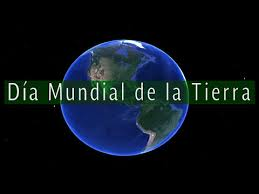
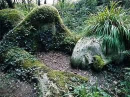
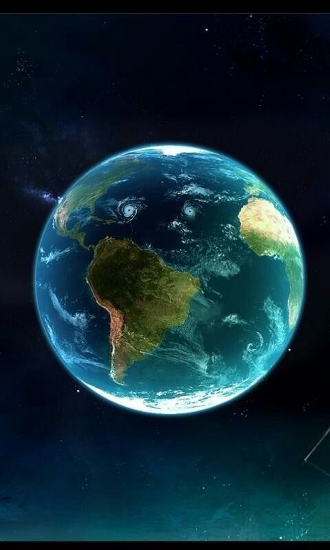
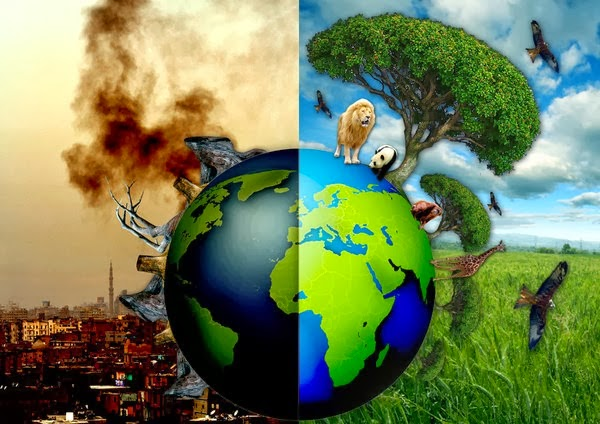
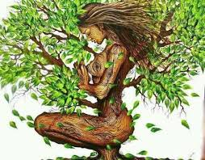
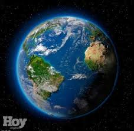
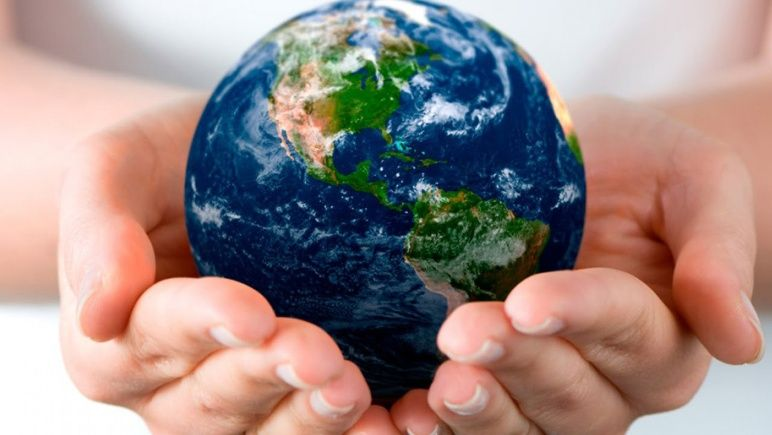

Dia Internacional de la Madre Tierra 22 de abril
- 

- 
- 
- 
- 
- 
- 
Realizado por:
Castillo Cortes Guadalupe
4 "H"
Especialidad
Programacion
Submodulo
Desarrolla Aplicaciones Moviles
Docente:
Lic.Jose Antonio Gomez Hernandez
4 "H"
Programacion
Desarrolla Aplicaciones Moviles
Lic.Jose Antonio Gomez Hernandez
Celebramos el Dia Internacional de la Madre Tierra para recordar que el planeta y sus ecosistemas nos dan la vida y el sustento. Con este dia, asumimos, ademas, la responsabilidad colectiva, como nos recordaba la Declaracion de Rio de 1992, de fomentar esta armonia con la naturaleza y la Madre Tierra. Este dia nos brinda tambien la oportunidad de concienciar a todos los habitantes del planeta acerca de los problemas que afectan a la Tierra y a las diferentes formas de vida que en el se desarrollan.


En 1969, Nelson tuvo la idea de organizar una protesta en favor del medio ambiente tomando como modelo las manifestaciones en contra de la guerra de Vietnam. "Fue algo frenético. Nos llegaban telegramas, cartas y consultas telefónicas desde todas partes del país", escribiría Nelson en un ensayo poco antes de morir en julio de 2005 a los 89 años. "El pueblo estadounidense por fin tenía un foro para expresar su preocupación sobre lo que estaba sucediendo con la tierra, los ríos, los lagos y el aire, y lo hicieron de forma espectacular". Nelson reclutó al activista Denis Hayes para organizar aquel primer 22 de abril en1970. Hoy en día se reconoce a Hayer como el precursor del movimiento ecologista moderno.
La Tierra y sus ecosistemas son nuestro hogar. Para alcanzar un justo equilibrio entre las necesidades económicas, sociales y ambientales de las generaciones presentes y futuras, es necesario promover la armonía con la naturaleza y el planeta. Es por eso que celebramos el Día Internacional de la Madre Tierra para recordar que el planeta y sus ecosistemas nos dan la vida y el sustento. Con este día, asumimos, además, la responsabilidad colectiva, como nos recordaba la Declaración de Río de 1992, de fomentar esta armonía con la naturaleza y la Madre Tierra.

La ONU informa que este año tendrá lugar la celebración del octavo Diálogo sobre armonía con la naturaleza, el día 23 de abril en la sede del organismo, en Nueva York. “Este diálogo interactivo es una buena plataforma para tratar temas como la producción sostenible y los patrones de consumo en la ‘Armonía con la naturaleza’. Asimismo, el diálogo quiere fomentar que los ciudadanos y las sociedades se conciencien sobre cómo se relacionan y cómo pueden relacionarse con el mundo natural; al mismo tiempo, pretende mejorar los cimientos éticos de la relación entre la humanidad y la Tierra, en términos de desarrollo sostenible”. A modo de reflexión, pues, algunos datos que merecen ser tomados en cuenta: Energía. Una de cada 5 personas aún no tiene acceso a la electricidad. Las energías limpias son la clave para conectarlos y mejorar sus condiciones de vida. La energía solar agregó más capacidad de generación eléctrica que los combustibles fósiles en 2017, señala la ONU. Agua. La demanda doméstica de agua de América Latina se duplicará para 2050. El objetivo 6 de la Agenda 2030 para el Desarrollo Sostenible está enfocado en “garantizar la disponibilidad de agua y su gestión sostenible y el saneamiento para todos”. Bosques. El 30% de la superficie terrestre está cubierta por bosques. Frenar la deforestación y restaurar bosques degradados es crucial para garantizar medios de subsistencia a 1,600 millones de personas. Océanos. Al menos 8 millones de toneladas de plástico van a parar al mar cada año, el equivalente a descargar un camión de basura en los océanos cada minuto. La ONU invita a dejar de usar plástico descartable para crear mares limpios.

La Asamblea General designa en su resolución A/RES/63/278 el 22 de abril como el Día Internacional de la Madre Tierra, teniendo en cuenta que en muchos países se celebra el día de la Tierra, y con el objetivo de alcanzar un justo equilibrio entre las necesidades económicas, las sociales y las ambientales de las generaciones presentes y futuras, y para promover la armonía con la naturaleza y la Tierra.En el año 2005, la Asamblea General declaró 2008 como el Año Internacional del Planeta Tierra para promover la enseñanza de las ciencias de la Tierra para facilitar a la humanidad los instrumentos necesarios para el uso sostenible de los recursos naturales y para construir la infraestructura científica esencial para el desarrollo sostenible.